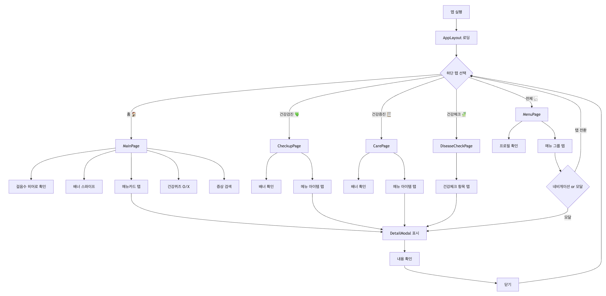
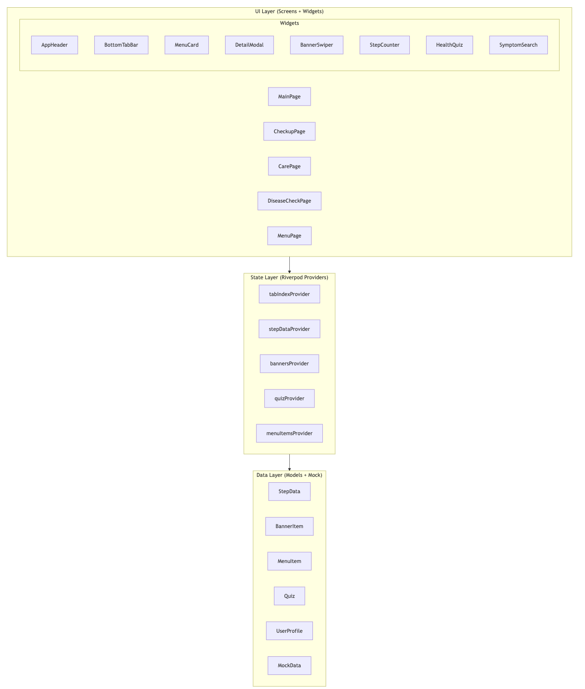
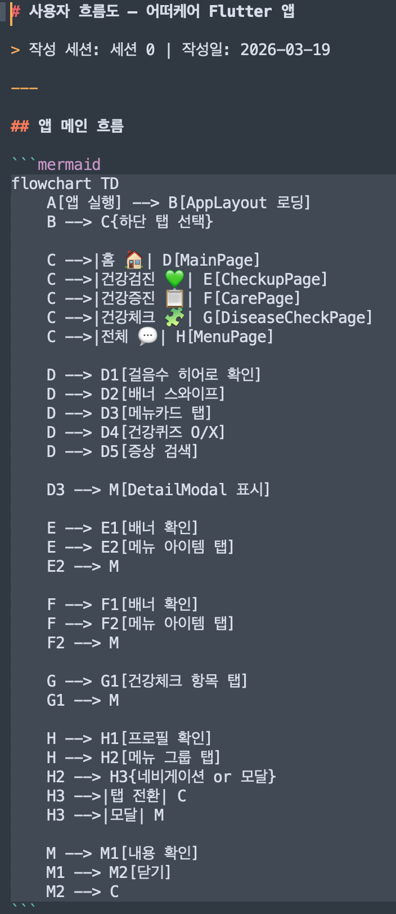
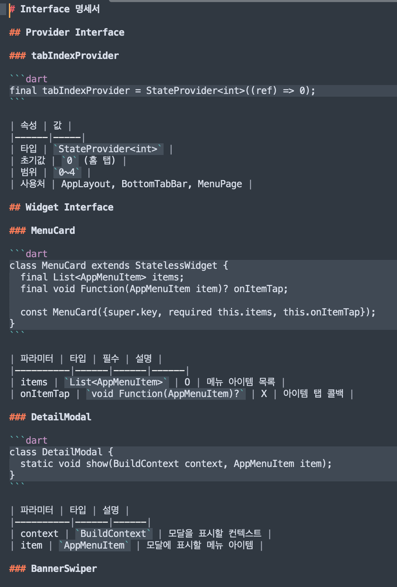
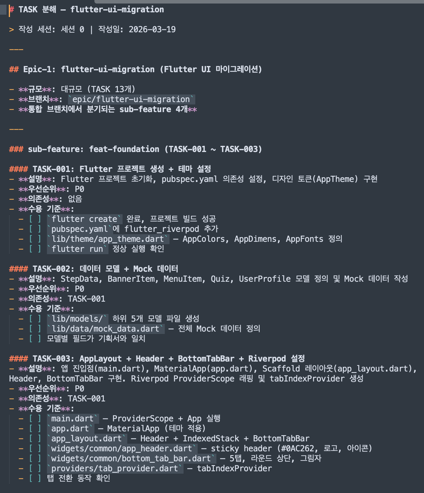
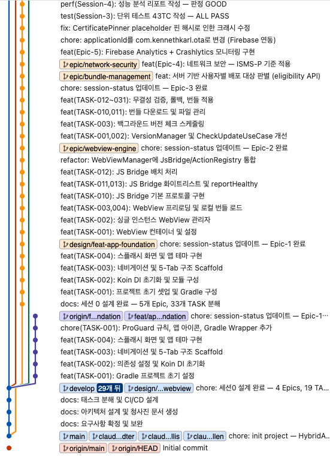
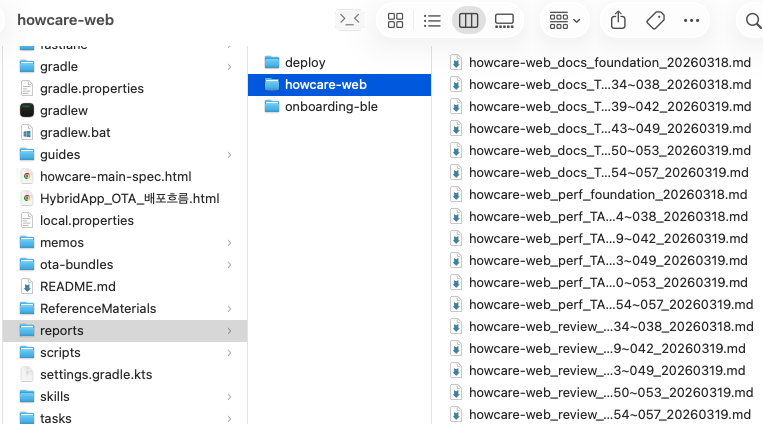
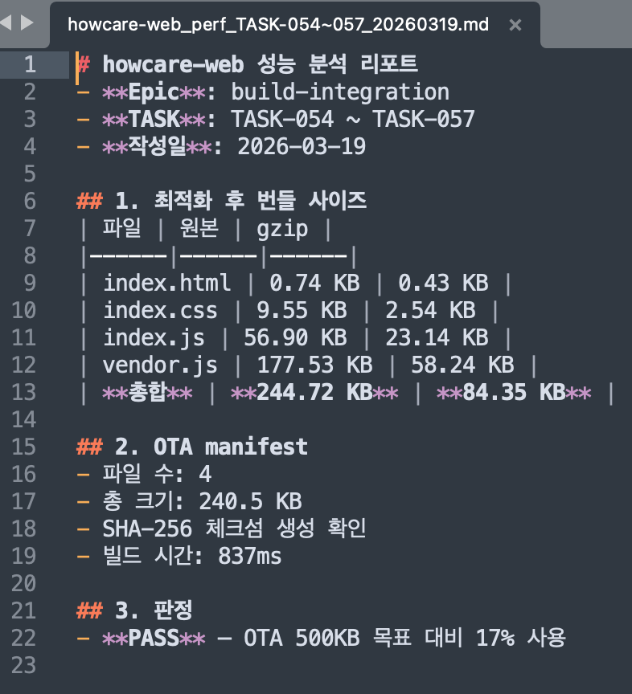
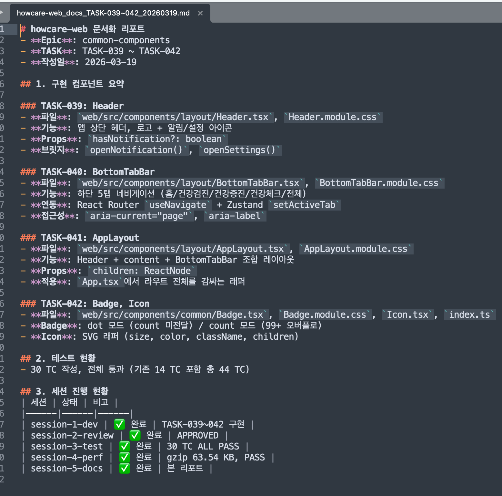

코드 생성은 SDLC의 한 조각일 뿐입니다.
AI 에이전트이 끝나면 설계 결정, 진행 상황, 근거 — 모든 것이 사라집니다.
브랜치 관리, 커밋 컨벤션, 리뷰 체크리스트, 상태 추적 — 전부 수작업.
리뷰 없이 머지, 테스트 없이 배포. AI 코드도 예외가 아닙니다.
한 번의 AI 패스로는 표면적 버그만 잡힙니다. 깊은 아키텍처 결함, 보안 취약점, 엣지 케이스는 놓칩니다.
단일 채팅이 아닌 — 역할 기반 페르소나와 멀티패스 품질 검증을 갖춘 구조화된 가상 팀.
아키텍트, 개발자, 리뷰어, QA, DevOps — 각 에이전트이 전문가 역할을 수행합니다.
설계, 리뷰, 테스트 에이전트은 서로 다른 전문가 페르소나로 3회 검증. 단일 패스가 놓치는 것을 찾아냅니다.
handoff.md + .agent-status.json으로 에이전트 간 컨텍스트 100% 보존.
리뷰 반려 → 개발. 테스트 실패 → 개발. 성능 위험 → 개발. 지름길 없음.
여러 기획서를 순차 처리. 완료 후 자동 아카이브 + 초기화.
Android, iOS, Python — 같은 프레임워크, .env 변수 치환으로 플랫폼별 대응.
기획서 투입 → 프로덕션 배포 — 피드백 루프 내장.
피드백 루프를 포함한 상세 흐름도
에이전트 0, 2, 3은 서로 다른 전문가 페르소나로 3단계 검증을 수행합니다. 각 Pass는 이전 Pass가 놓친 것을 잡아냅니다. 어느 Pass에서든 실패하면 Pass 1부터 재시작합니다.
멀티패스 에이전트 (0, 2, 3)은 실패 시 항상 Pass 1부터 재시작합니다 — 부분 재실행 불가. 이를 통해 매 라운드가 완전하고 새로운 검증임을 보장합니다. 3회 이상 수동 수정 시도가 실패하면 git reset + 범위 축소가 트리거됩니다.
AutoSDLC로 생성된 프로젝트의 실제 스크린샷.
※ 아래는 에이전트 0이 생성하는 다수의 산출물 중 일부 예시입니다.

기획서 분석으로 자동 생성된 Mermaid 플로우차트. 앱 흐름, 전환, 분기 조건을 시각화.

다양한 다이어그램 중 예시. UI → State → Data 3계층 구조와 의존성 시각화.

다양한 다이어그램 소스 중 예시. Mermaid 원본 소스. VS Code / GitHub / GitLab에서 자동 렌더링.

다수 명세 문서 중 예시. Provider/Widget 인터페이스 정의와 속성, 타입, 파라미터 테이블.

Epic/서브기능/TASK로 자동 분해. 설명, 우선순위, 의존성, 인수 기준 포함.

TASK ID가 포함된 구조화된 커밋 로그. feat(TASK-XXX) 형식으로 완전한 추적 가능.

start-*.sh로 자동 생성된 폴더 구조. 가이드, 소스, 리포트, 설정이 체계적으로 정리.

번들 사이즈, gzip 비율, OTA 매니페스트 분석. 자동 PASS/FAIL 판정.

컴포넌트 문서 + 에이전트별 상태/판정이 포함된 진행 요약 테이블.
모든 에이전트은 구조화된 리포트를 생성하며, reports/ 디렉토리에 축적됩니다.
| 에이전트 | 리포트 유형 | 파일명 패턴 |
|---|---|---|
| 에이전트 0 | 설계 명세 + TASK 분해표 | {spec}_spec_requirements_YYYYMMDD.md |
| 에이전트 1 | 개발 로그 | {spec}_dev_TASK-XXX_YYYYMMDD.md |
| 에이전트 2 | 코드 리뷰 (3-Pass) | {spec}_review_TASK-XXX_YYYYMMDD.md |
| 에이전트 3 | 테스트 결과 (3-Pass) | {spec}_test_TASK-XXX_YYYYMMDD.md |
| 에이전트 4 | 성능 분석 | {spec}_perf_TASK-XXX_YYYYMMDD.md |
| 에이전트 5 | 문서화 | {spec}_docs_TASK-XXX_YYYYMMDD.md |
| 에이전트 6 | 배포 체크리스트 | vX.X.X_deploy_release_YYYYMMDD.md |
가이드가 동작을 정의하고, 스킬이 실행하고, 상태 파일이 추적하고, 게이트가 품질을 강제하고, 페르소나가 검증합니다.
AutoSDLC 템플릿 레포지토리 디렉토리 레이아웃.
AutoSDLC/ ├── guides/ # 에이전트 가이드 + 플랫폼 변수 (Source of Truth) │ ├── guide-common.md # 공통 규칙 │ ├── guide-agent-0-design.md # 에이전트 0: 아키텍처 설계 (3-Pass) │ ├── guide-agent-1-dev.md # 에이전트 1: 개발 │ ├── guide-agent-2-review.md # 에이전트 2: 코드 리뷰 (3-Pass) │ ├── guide-agent-3-test.md # 에이전트 3: 테스트 (3-Pass) │ ├── guide-agent-4-perf.md # 에이전트 4: 성능 │ ├── guide-agent-5-docs.md # 에이전트 5: 문서화 │ ├── guide-agent-6-deploy.md # 에이전트 6: 배포 │ ├── error-code-guide.md # 에러 코드 체계 │ ├── security-checklist.md # 보안 검증 체크리스트 │ ├── platform-vars-aos.env # Android 변수 │ ├── platform-vars-ios.env # iOS 변수 │ ├── platform-vars-python.env # Python 변수 │ ├── platform-vars-flutter.env # Flutter 변수 │ └── platform-vars-react.env # React 변수 ├── templates/ # 프로젝트 초기화 템플릿 │ ├── aos/ # Android 초기화 + CI │ ├── ios/ # iOS 초기화 + CI │ ├── python/ # Python 초기화 + CI │ ├── skills/ # Claude 슬래시 커맨드 │ └── settings/ # Claude Code settings.json ├── cross-platform/ # 크로스 플랫폼 조율 │ ├── api-contract.md # API 명세 (단일 진실 공급원) │ ├── feature-parity.md # 기능 동등성 추적 │ └── release-coordination.md # 릴리즈 조율 ├── samples/ # 기획서 샘플 ├── images/ # 스크린샷 (산출물 미리보기) ├── start-aos.sh # Android 프로젝트 생성기 ├── start-ios.sh # iOS 프로젝트 생성기 ├── start-python.sh # Python 프로젝트 생성기 └── quickstart.md # 상세 사용 가이드
| 항목 | 기존 AI 코딩 | AutoSDLC v5 |
|---|---|---|
| 범위 | 코드 생성만 | 설계부터 배포까지 (7개 에이전트) |
| 검증 | 단일 패스, 구조 없음 | 3-Pass 멀티 페르소나 검증 (설계/리뷰/테스트) |
| 품질 게이트 | 사용자 재량 | 리뷰 → 테스트 → 성능 게이트 + 자동 반려 루프 |
| 컨텍스트 | 에이전트 종료 시 유실 | 인수인계 파일로 100% 보존 |
| 보안 | 미검증 | OWASP Mobile Top 10 + STRIDE (리뷰 Pass 2) |
| 실패 복구 | 수동 | 자동 루프: 반려/실패 → 개발 → 재검증 |
| 추적 | 없음 | .agent-status.json + git log + reports/ |
| 산출물 | 코드만 | 코드 + 문서 + 리포트 + ADR + 블루프린트 |
| 플랫폼 | 언어별 한정 | .env 치환 (Android/iOS/Python) |
| 팀 구조 | 단일 채팅 | 역할 기반 에이전트 + 페르소나 전환 |
| 다중 기획서 | 미지원 | 자동 아카이브 + 초기화 + 순차 처리 |
템플릿은 프로젝트별로 복사됩니다 — 생성 후 각 프로젝트는 독립적으로 커스터마이징 가능. AI는 교체 가능한 부품입니다.
빌드 명령어, 테스트 도구, 소스 루트, 패키지 매니저. {{BUILD_COMMAND}}, {{TEST_COMMAND}} 플레이스홀더가 프로젝트별로 치환됩니다.
프로젝트별 동작 규칙, 판정 기준, 산출물 형식 수정 가능. 예: 더 엄격한 리뷰, 더 높은 커버리지 목표.
프로젝트별 커맨드 추가 또는 기존 커맨드 수정. .claude/commands/에 마크다운 파일만 추가하면 됩니다.
GitLab CI, GitHub Actions 등 프로젝트 배포 환경에 맞게 파이프라인 템플릿을 커스터마이징.
프로젝트 요구사항에 따라 테스트 커버리지 목표, 성능 예산(번들 사이즈, 메모리), 리뷰 기준 조정.
Epic 규모, 팀 크기, 배포 주기에 따라 feat/epic/release 브랜치 전략 조정.
AI는 끊임없이 진화합니다. AutoSDLC 에이전트 가이드는 특정 AI에 종속되지 않는 마크다운 기반 프롬프트입니다 — AI 코딩 어시스턴트가 바뀌어도 프레임워크 구조는 그대로 유지됩니다.
| 계층 | AI 의존도 | 교체 시 변경 |
|---|---|---|
| 에이전트 가이드 (guides/) | 없음 — 순수 마크다운 | 변경 불필요 |
| 슬래시 커맨드 (skills/) | 낮음 — 마크다운 프롬프트 | 경미한 문법 조정 |
| 진입 스크립트 (start-*.sh) | 없음 — 쉘 스크립트 | 변경 불필요 |
| 상태 추적 (.agent-status.json) | 없음 — JSON 파일 | 변경 불필요 |
| settings.json | 있음 — AI 도구 설정 | AI별 설정으로 교체 |
기획서를 준비하세요. 나머지는 AutoSDLC가 처리합니다.
스크립트가 폴더 구조, 가이드, CI/CD, git init을 자동 완성합니다. 모바일과 Python 백엔드/자동화를 지원합니다.
bash ./start-aos.sh
bash ./start-ios.sh
bash ./start-python.sh
기획서를 tasks/requirements.md에 넣으세요. 에이전트 0이 3-Pass 설계 검증을 통해 Epic/TASK로 분석 및 분해합니다.
기획서(MD) 외에 화면 디자인 이미지, PPT, 와이어프레임, API 명세를 tasks/ 폴더에 추가하세요. AI가 텍스트 + 시각 자료를 종합하여 더 정확한 요구사항 추출과 TASK 분해를 수행합니다.
Claude를 열고 /agent-0으로 시작하세요. 각 에이전트은 가이드에 따라 자동 실행됩니다. 3-Pass 에이전트 (0, 2, 3)은 멀티 페르소나 검증을 자동으로 수행합니다.
claude → /agent-0 → /agent-1 → ... → /agent-6
리뷰가 반려되거나 테스트가 실패하면, 파이프라인이 자동으로 에이전트 1 (개발)로 되돌아가 수정 후 재검증을 실행합니다. 품질 게이트를 통과할 때까지 수동 개입이 필요 없습니다.